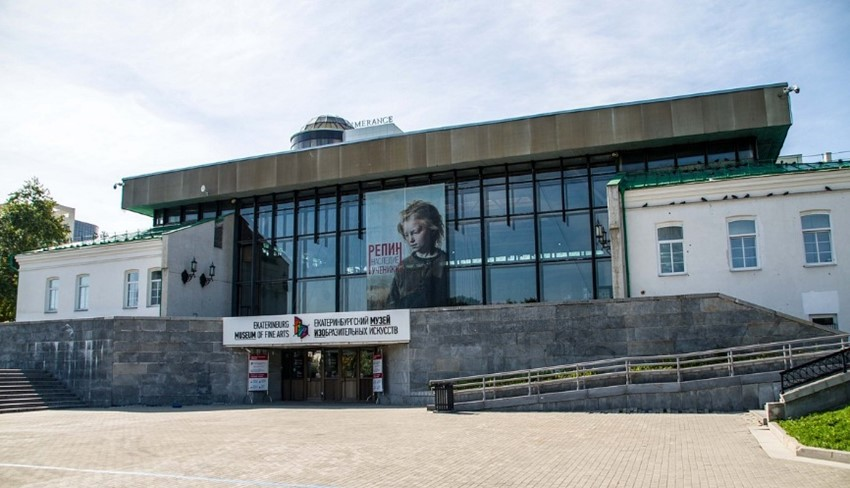
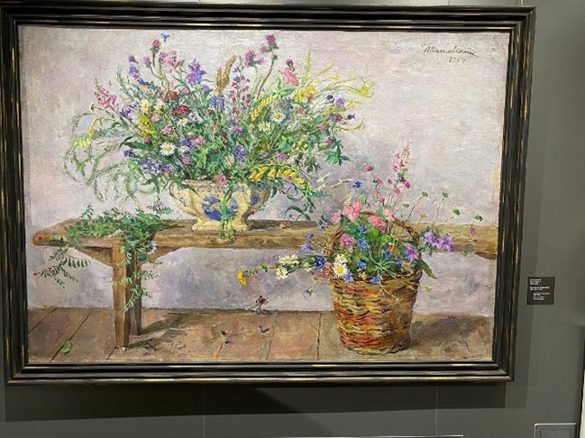

Екатеринбургский Музей
Изобразительных Искусств
Екатеринбургский музей изобразительных искусств — крупнейший художественный музей Урала, имеет четыре здания — главное расположено на берегу реки Исети в Екатеринбурге, в Историческом сквере, второе — на улице Вайнера, 11, где в 2021 году открылся культурно-выставочный центр «Эрмитаж-Урал», третье здание — Музей наивного искусства на ул. Розы Люксембург, 18, и Центр истории камнерезного дела имени А. К. Денисова-Уральского на ул. Пушкина, 5. В основе здания музея — одно из старейших сохранившихся зданий Екатеринбурга, построенное в 1730-х — начале 1740-х годов как госпиталь Екатеринбургского железоделательного завода, впоследствии неоднократно меняло своё предназначение и перестраивалось. Изначально состояло из четырёх корпусов, сблокированных по периметру внутреннего двора — в северо-восточной части размещался госпиталь, в северо-западной монетная экспедиция, в южной части — аптека, в юго-западной — пробирная лаборатория и меховая, тут же был заводской острог.
В 1970-х годах во время реконструкции «Плотинки» здание было решено сохранить, в то время как большинство корпусов бывшего Екатеринбургского завода было снесено и на их месте был разбит Исторический сквер. 9 мая 1986 года музейное здание было введено в эксплуатацию. Внутренний двор был перекрыт лёгкой кровлей. Образовавшийся проём, выходящий на набережную, ограждён стеклянной стеной. Новый просторный зал вместил в себя коллекцию уральского чугунного литья, центром которой является уникальный Каслинский чугунный павильон.  